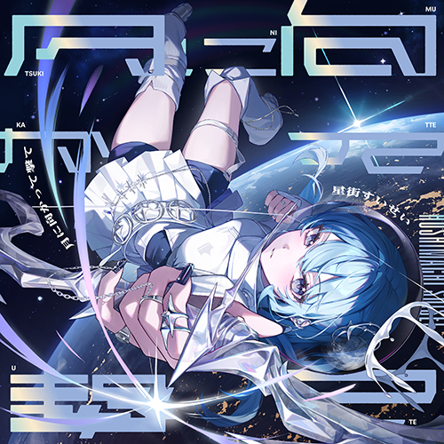
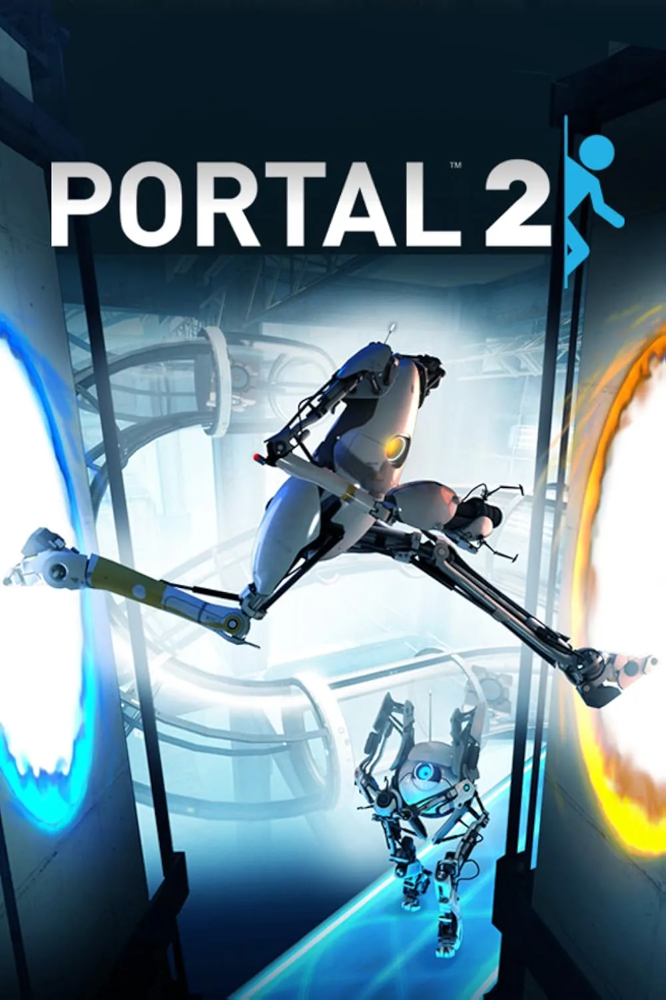
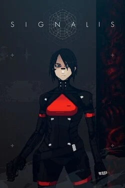
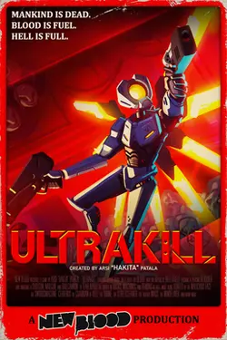
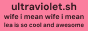
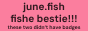
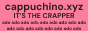
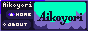
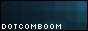
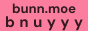

hi, i'm jaiden, and this is a website!
about me
i make computers do funny things
i'm jaiden riordan (i go by {nothing}neko on the internet)
i'm a tinkerer and college student by day, and the coo at fyra labs by all other times
please direct any american express mailers and other mail to jade@e.email
what i'm up to right now
personal projects
fyra+ultramarine
arduino-app-lab,
helium-browser-bin, and vicinae
album i'm listening to right now

月に向かって撃て (Moonshot) - 星街すいせい (Hoshimachi Suisei)
stream or buy heregames i'm playing



buy me a coffee/vodka/chromebook
if you appreciate what i do, consider buying me a drink, or perhaps a chromebook https://github.com/sponsors/nothingneko
stuff i've done and fun facts
- i own ~50 laptops (as of dec 27 2024)
- i work on ultramarine linux–primarily releng and hwe work,i'm why we're in pi imager
- speaking of pi, i am a huge rpi fangirl, it's how i got into computing
- ubuntu mate—i am to blame for yaru on it
- made some octii themes, anyone remember octii?
- i got a centos stream desktop to run as an ostree, i think i was the first to do this, it was before ublue did at least
- this site used to be a html port of a site written for the gopher protocol. why? fuck if i know
- i'm a founding member of Fyra Labs
(these are a few of) my favourite things
- the tiktaalik (favourite fish)
- good espresso
- good green tea, usually hojicha
- a controller clicky dpad and mushy buttons, see the 8bitdo pro 3 for something close
- tactile mechanical switches, i daily drive a system76 launch with gazzew bobas (knockoff holy pandas)
- pumpkin, #2 is pecan (favourite pies)
- raspberry (favourite pi)
- i am of the strong belief that the best type of pizza is saint paul/minnesota style, and that the only place to get it since savoy's in downtown closed is from carbone's, and only the original one
the place with the badges!
here's the people i know and what’s that other word, and all kinds of cool stuff, woo










if you're not on this list email me and tell me why you're junky, wunky, lunky, or stunky enough to be here.
gpg
Jaiden Riordan (nothingneko) jade@fyralabs.com
https://github.com/nothingneko.gpg